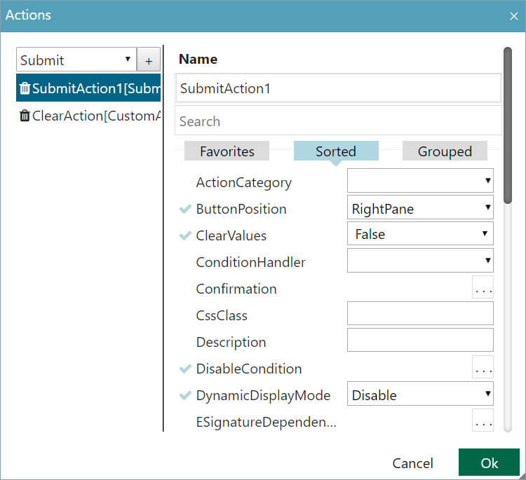

Elemente der Benutzeroberfläche von Portal Studio
Die Benutzeroberfläche von Portal Studio verfügt über Standardschaltflächen und -symbole in den Bereichen und Popups der Anwendung.
Standardschaltflächen dienen der durchgängigen Konsistenz innerhalb der Benutzeroberfläche der Anwendung. Sie verbessern die Benutzerfreundlichkeit und beschleunigen die Eingabe von Daten.
Diese Tabelle definiert die allgemeinen Schaltflächen in Portal Studio.
|
Schaltfläche |
Funktion der Schaltfläche . . . |
|---|---|
|
OK |
Speichert Ihre Änderungen und schließt ein Popup oder modales Fenster. |
|
Cancel |
Schließt ein Popup oder modales Fenster, ohne Ihre Änderungen zu speichern. Hinweis: Optional können Sie auch auf "X" oben rechts in der Ecke klicken, um ein Popup zu schließen. |
|
... |
Zeigt ein Popup oder modales Fenster an, in dem Sie das zugehörige Feld oder die zugehörige Eigenschaft besser anpassen können. Diese Schaltfläche wird als Schaltfläche "Mehr" bezeichnet. |
|
Clear |
Löscht Auswahlmöglichkeiten und Werte, die Sie in Felder in einem Popup, Fensterbereich oder modalen Fenster eingegeben haben. |
Standardsymbole dienen der durchgängigen Konsistenz innerhalb der Benutzeroberfläche der Anwendung. Sie verbessern die Benutzerfreundlichkeit und beschleunigen die Eingabe von Daten.
In der folgenden Tabelle sind die Standardsymbole abgebildet und beschrieben.
|
Symbol |
Beschreibung |
Funktion des Symbols . . . |
|---|---|---|
|
|
Create New Item |
Ein neues Element im Bereich zu erstellen. |
|
|
List Mode |
Eine einfache Liste von Elementen anzuzeigen. |
|
|
Tree Mode |
Eine Liste mit Elementen in einer Hierarchie anzuzeigen. |
|
|
Tiles Mode |
Eine Reihe von Elementen in einer Kachelansicht anzuzeigen. |
|
Details Mode |
Eine Liste von Elementen mit Name und Beschreibung anzuzeigen. |
|
|
|
Refresh |
Aktualisiert den Bereich. |
Fensterbereiche in Portal Studio stellen ein Suchfeld zur Verfügung, mit dem Sie bestimmte Komponenten, Felder und Eigenschaften in diesem Katalog oder Verzeichnis suchen können. Geben Sie die ersten Zeichen oder den gesamten Namen in das Suchfeld ein, um nach einer bestimmten Komponente, einem Feld oder einer Eigenschaft zu suchen.
Das Suchfeld filtert die Liste der zurückgegebenen Komponenten während der Eingabe. Das Suchfeld geht davon aus, dass am Anfang und am Ende der Eingabe ein Platzhalterzeichen steht. So finden Sie alle Komponenten, deren Name den Ausdruck oder Teilausdruck enthält.
Portal Studio zeigt Felder und Eigenschaften in drei Ansichten an:
| • | "Favoriten" (Favorites) – Hier wird eine Liste der Felder und Eigenschaften angezeigt, die Sie als Favoriten ausgewählt haben. |
| • | "Sortiert" (Sorted) – Hier wird eine Liste aller Felder und Eigenschaften in alphabetischer Reihenfolge angezeigt. |
| • | "Gruppiert" (Grouped) – Hier werden alle Felder und Eigenschaften angezeigt, die basierend auf ihrer Funktion, z. B. Verhalten, Darstellung oder Layout, in Kategorien angeordnet sind. |
Sie können jederzeit zwischen Ansichten wechseln, indem Sie die Registerkarte der jeweiligen Ansicht auswählen. In der Ansicht "Sortiert" (Sorted) werden in Fensterbereichen standardmäßig Felder und Eigenschaften angezeigt.
Hinzufügen von Feldern und Eigenschaften zur Ansicht "Favoriten" (Favorites)
Sie können der Ansicht "Favoriten" (Favorites) Felder und Eigenschaften hinzufügen, indem Sie die Strg-Taste drücken, während Sie auf den gewünschten Feld- oder Eigenschaftsnamen klicken. Feld- und Eigenschaftsnamen werden blau angezeigt, wenn sie zur Favoritenliste hinzugefügt werden.
| Hinweis: | Felder und Eigenschaften bleiben als Favoriten nur auf dem Client-Computer erhalten, auf dem Sie festgelegt wurden. |
Portal Studio verwendet modale Fenster, um Einstellungen zu konfigurieren, für die Instanzen hinzugefügt werden müssen. Modale Fenster verfügen über zwei Fensterbereiche:
| • | Im linken Fensterbereich werden zuvor erstellte Instanzen aufgelistet. |
| • | Im rechten Fensterbereich werden detaillierte Informationen und Eigenschaften für die Anpassung der ausgewählten Instanz bereitgestellt. |
Alle modalen Fenster enthalten die Schaltfläche "Hinzufügen", über die Sie der Liste der Instanzen im linken Fensterbereich eine neue Instanz hinzufügen können. Wenn Sie auf "OK" klicken, werden alle von Ihnen vorgenommenen Änderungen gespeichert und das modale Fenster wird geschlossen. Wenn Sie auf "Abbrechen" klicken, werden Ihre Änderungen verworfen und das modale Fenster wird geschlossen.
Die folgende Abbildung enthält ein Beispiel für das modale Fenster "Actions".

Einige Felder und Eigenschaften werden als Dropdown-Felder angezeigt, die die folgenden booleschen Werte enthalten:
| • | Nicht festgelegt (Not Set) |
| • | Wahr |
| • | Falsch |
Viele boolesche Dropdown-Fenster verwenden standardmäßig die Einstellung "Nicht festgelegt" (Not Set). Die Funktionalität des Werts "Nicht festgelegt" (Not Set) entspricht dem Festlegen des Felds oder der Eigenschaft auf "Falsch". Siemens empfiehlt, für Felder und Eigenschaften den Wert "Nicht festgelegt" (Not Set) unverändert zu lassen, bis Sie für eine geschäftliche Anforderung das Feld auf "Falsch" festlegen müssen.